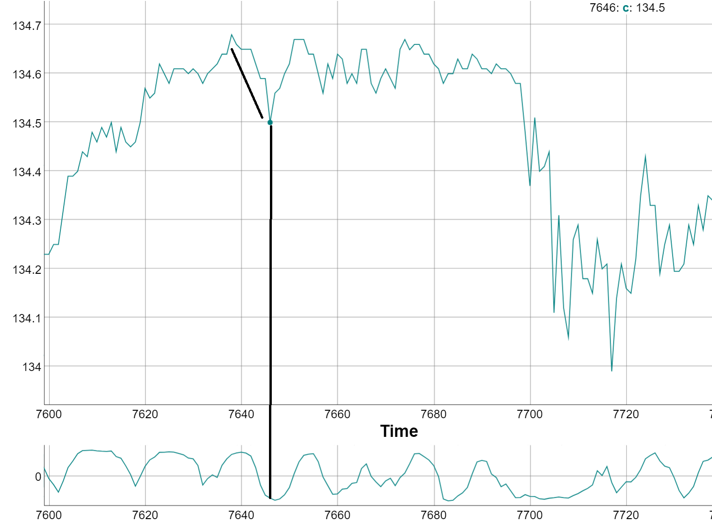

16 Correlation Trend Indicator
It is an Ehler’s index. It compares the price (or any other indicator) against a straight diagonal line, revealing the direction and velocity of the price. Reversals in the index can reveal turing points.

Figure 9.23: Correlation Trend Indicator